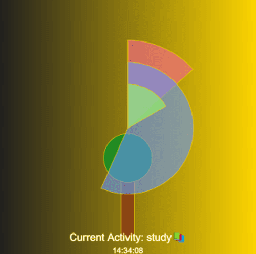
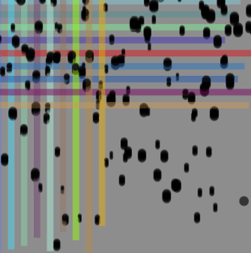
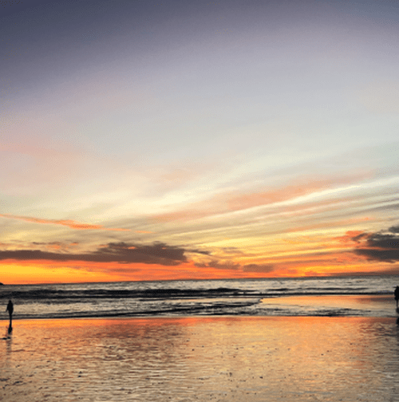
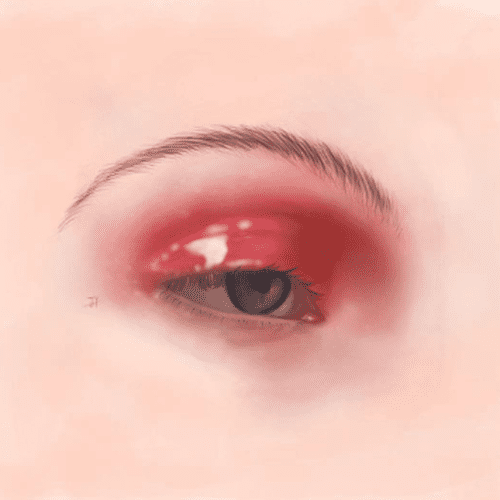

Concentration Management
This project explores the passage of time and the rhythms of activity in daily life through a multi-ringed clock, the growth of trees.
RunSee code for Concentration Management

Emotional Space Station
Two colored rectangles are randomly generated on the canvas and they move horizontally and vertically. When the rectangle bars reach a certain height, the background resets and a new movement starts. Particles are randomly generated and move up from the bottom of the canvas, simulating the effect of smoke or bubbles. When the mouse is pressed and moved, particles are generated at the mouse's current position, creating the visual effect of a drag track.
RunSee code for Concentration Management

Photography
These landscape photographs not only capture the forms of nature but also convey a sense of calm and reflection, allowing the viewer to feel the emotions carried within the shifting light.

Sketchbook
Through the fluidity of watercolor and the depth of oil painting, I explore expressions and emotions, turning the canvas into a mirror of feelings.